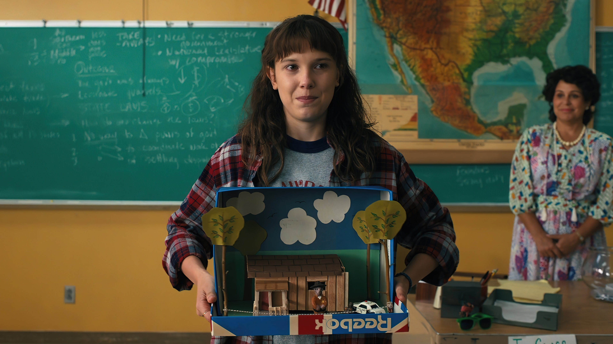
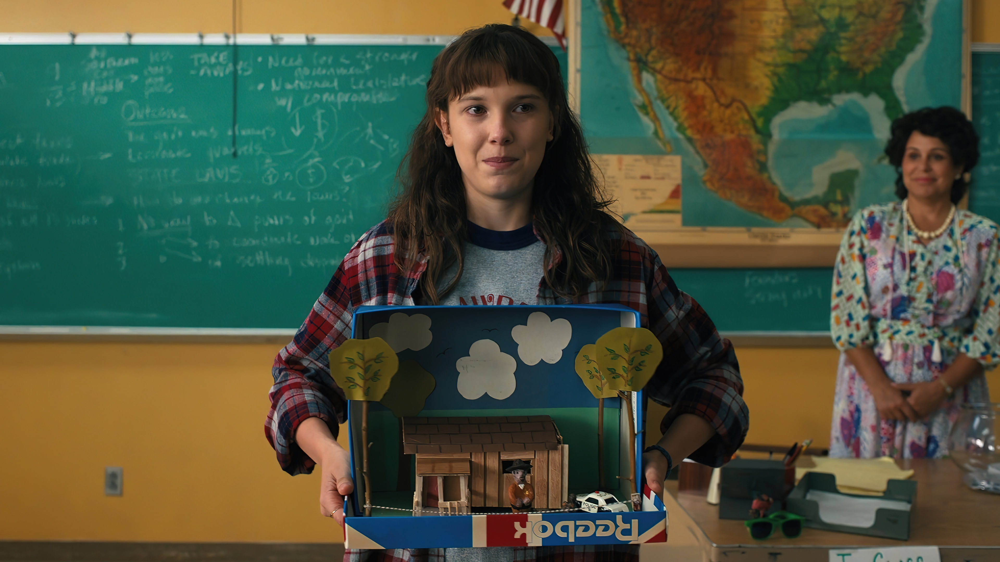

Personagem: Eleven (Jane Hopper/ Jane Ives)
Série: Stranger Things
Idade: 12 anos (primeira temporada)
Sexo: Feminino
Características: Tímida, socialmente retraída, ferozmente protetora, leal, determinada, lutadora
Habilidades: Telecinese, telepatia, levitação, manipulação de portal, teletransporte, percepção extra-sensorial, visão remota, biocinesia, tecnopatia
História
Jane "Eleven" Hopper, nascida Jane Ives, é uma personagem principal da série "Stranger Things". Ela foi cobaia do Laboratório Nacional de Hawkins, sendo filha única de Terry Ives e Andrew Rich. Em novembro de 1983, ela escapou do laboratório e foi encontrada na floresta por Mike, Lucas e Dustin enquanto procuravam Will Byers. Adotada por Jim Hopper, ela mostrou habilidades psíquicas poderosas, incluindo telecinese e telepatia. Ao longo da série, Eleven demonstrou uma determinação notável em proteger seus amigos, enfrentando diversos desafios e inimigos. Após perder seus poderes temporariamente na terceira temporada, ela os recupera e continua lutando contra ameaças como Vecna na quarta temporada. Ainda em processo de descoberta de sua identidade e poderes, Eleven enfrenta desafios pessoais e emocionais enquanto busca uma vida normal e o equilíbrio entre sua humanidade e suas habilidades sobrenaturais.
Concepção e escrita
Os irmãos Duffer basearam o personagem de Eleven em sobreviventes dos experimentos do Projeto MKULTRA, uma operação de pesquisa clandestina da CIA que visava desenvolver técnicas de manipulação mental e controle cerebral. Esta influência do MKULTRA é evidente na origem de Eleven, que foi submetida a testes desumanos no Laboratório Nacional de Hawkins, onde adquiriu seus poderes psíquicos. Além disso, os Duffer se inspiraram em filmes como "E.T. O Extraterrestre" e em animes como "Elfen Lied" e "Akira" para moldar a atmosfera misteriosa e sobrenatural em torno de Eleven.
Escolha de intérprete
A escalação de Millie Bobby Brown para o papel de Eleven foi crucial para o sucesso do personagem. Os irmãos Duffer buscavam uma atriz infantil capaz de transmitir uma ampla gama de emoções, mesmo quando o personagem não estava falando muito. O fato de Brown ter conseguido mergulhar profundamente no papel e manter a essência de Eleven mesmo nos momentos de silêncio foi fundamental para dar vida à personagem. Apesar das preocupações iniciais sobre raspar a cabeça para o papel, Brown abraçou a transformação e entregou uma performance excepcional.
Recepção
O desempenho de Millie Bobby Brown como Eleven foi amplamente aclamado pela crítica e pelo público. Sua interpretação da personagem trouxe profundidade e carisma, tornando Eleven um dos elementos mais cativantes de "Stranger Things". Brown recebeu várias indicações e prêmios por seu trabalho, incluindo indicações ao Screen Actors Guild Award e ao Primetime Emmy Award. Sua habilidade de transmitir emoção mesmo em situações silenciosas rendeu elogios e contribuiu significativamente para a popularidade e o impacto cultural da série.